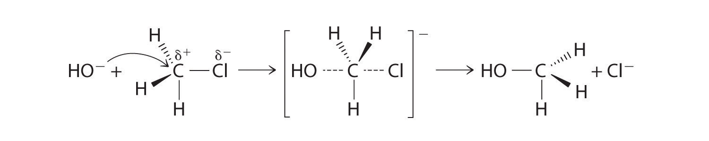
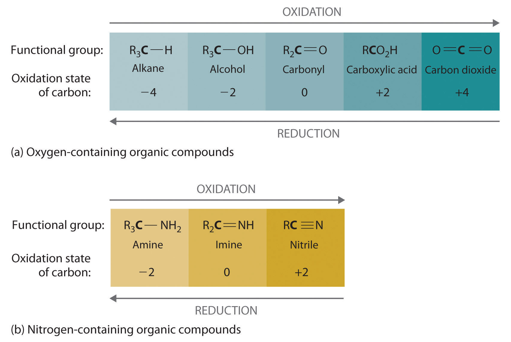

Certain patterns are encountered repeatedly in organic reactions, many reflecting the interactions of nucleophiles and electrophiles. In this section, we discuss five common types of organic reactions: substitution reactions, elimination reactions, addition reactions, radical reactions, and oxidation–reduction reactions. You have encountered many of these types of reactions previously, such as the formation of peptides by the elimination of water, the oxidation–reduction reactions that generate voltage in batteries, and chain reactions that involve organic radicals. (For more information on peptide formation, see Chapter 12 "Solids", Section 12.8 "Polymeric Solids". For more information on batteries, see Chapter 19 "Electrochemistry". For more information on radicals, see Chapter 14 "Chemical Kinetics", Section 14.6 "Reaction Rates—A Microscopic View".) In this section, we expand our discussion to include some of the mechanisms behind these reactions.
In a substitution reactionA chemical reaction in which one atom or a group of atoms in a substance is replaced by another atom or a group of atoms from another substance., one atom or a group of atoms in a substance is replaced by another atom or group of atoms from another substance. A typical substitution reaction is reacting the hydroxide ion with methyl chloride:
Equation 24.1
CH3Cl + OH− → CH3OH + Cl−Methyl chloride has a polar C–Cl bond, with the carbon atom having a partial positive charge. In Equation 24.1, the electronegative Cl atom is replaced by another electronegative species that is a stronger nucleophile, in this case OH−. Reactions of this sort are called nucleophilic substitution reactions. For this type of reaction to occur, the nucleophilic reactant must possess a pair of electrons and have a greater affinity for the electropositive carbon atom than the original substituent.
One type of nucleophilic substitution reaction is shown in Equation 24.1. It proceeds by a mechanism in which the lone pair of electrons on the entering nucleophile (OH−) attacks the partially positively charged carbon atom of the polar C–Cl bond, causing the C–Cl bond to weaken and break:
Figure 24.12

In nucleophilic substitution reactions, the nucleophile must possess a pair of electrons and have a greater affinity for the electropositive species than the original substituent.
The convention for writing such a mechanism is to draw arrows showing the direction of electron flow—that is, from the electron-rich center (the nucleophile) to the electron-poor center (the electrophile). The intermediate species, enclosed by square brackets, represents a transient arrangement of atoms that is only postulated to exist. If the atom under attack (in this case, the partially positively charged carbon atom) had –CH3 groups bonded to it rather than H atoms, the bulky methyl groups would interfere with the attack by OH−, making the reaction sterically hindered. The reaction would then proceed in two discrete steps in a second type of substitution reaction: the C–Cl bond would break, forming the (CH3)3C+ carbocation (the electrophile), which would then react with hydroxide (the nucleophile) in a separate step to give the product, (CH3)3COH.
Mustard gas.
An example of a nucleophilic substitution reaction involves the chemical warfare agent known as mustard gas [(ClCH2CH2)2S], which caused about 400,000 casualties during World War I. Mustard gas is toxic because it contains a chloride that can be displaced by nucleophilic amino groups in proteins, thereby allowing the molecule to irreversibly bond to a protein. Because the other product of the reaction is HCl, mustard gas causes severe burns to mucous membranes in the respiratory tract. If mustard gas reacts with DNA (deoxyribonucleic acid), cross-linking of the DNA strands through sulfur occurs, which results in coding errors, the inhibition of replication, and disruption of other DNA functions. If mustard gas reacts with RNA (ribonucleic acid), protein synthesis is altered (see Section 24.6 "The Molecules of Life").
Some reactions involve the removal, or “elimination,” of adjacent atoms from a molecule. This results in the formation of a multiple bond and the release of a small molecule, so they are called elimination reactionsA chemical reaction in which adjacent atoms are removed, or “eliminated,” from a molecule, resulting in the formation of a multiple bond and a small molecule.. They have the general form
Figure 24.13
and are similar to cleavage reactions in inorganic compounds. (For more information on cleavage reactions, see Chapter 3 "Chemical Reactions", Section 3.5 "Classifying Chemical Reactions".) A typical example is the conversion of ethyl chloride to ethylene:
Equation 24.2
CH3CH2Cl → CH2=CH2 + HClElimination reactions are similar to cleavage reactions in inorganic compounds.
Much of the approximately 26 million tons of ethylene produced per year in the United States is used to synthesize plastics, such as polyethylene. In Equation 24.2, the A–B molecule eliminated is HCl, whose components are eliminated as H+ from the carbon atom on the left and Cl− from the carbon on the right. When an acid is produced, as occurs here, the reaction is generally carried out in the presence of a base (such as NaOH) to neutralize the acid.
A reaction in which the components of a species A–B are added to adjacent atoms across a carbon–carbon multiple bond is called an addition reactionA chemical reaction in which the components of a species A–B are added to adjacent atoms across a carbon-carbon multiple bond.. An example is the reverse of the reaction shown in Equation 24.2, reacting HCl with ethylene to give ethyl chloride:
Equation 24.3
HCl + CH2=CH2 → CH3CH2ClAn addition reaction is the reverse of an elimination reaction.
Although a multiple bond is stronger than a single bond, the π bonds of the multiple bond are weaker than the σ bond. The high electron density located between multiply bonded carbon atoms, however, causes alkenes and alkynes to behave like nucleophiles, where nucleophilic attack occurs from the more weakly bound π electrons. Hence alkenes and alkynes are regarded as functional groups. Nucleophilic attack occurs on the Hδ+ atom of the polar HCl bond, initially producing a species with a carbon that has only three bonds, a carbocation. In a second nucleophilic attack, Cl−, the electrophile in Equation 24.3, attacks the carbocation:
Alcohols, an important class of organic compounds, are often produced by addition reactions. Initial attack by the π bond of an alkene on a Hδ+ of H3O+ produces a carbocation. The carbocation then undergoes nucleophilic attack by a lone pair of electrons from H2O followed by elimination of H+ to form the alcohol.
Many important organic reactions involve radicals, such as the combustion of fuels. Probably the best known is reacting a saturated hydrocarbon, such as ethane, with a halogen, such as Br2. The overall reaction is as follows:
Equation 24.4
Radical chain reactions occur in three stages: initiation, propagation, and termination. (For more information on radicals, see Chapter 14 "Chemical Kinetics", Section 14.6 "Reaction Rates—A Microscopic View".) At high temperature or in the presence of light, the relatively weak Br–Br bond is broken in an initiation step that produces an appreciable number of Br atoms (Br·). During propagation, a bromine atom attacks ethane, producing a radical, which then reacts with another bromine molecule to produce ethyl bromide:
Equation 24.5
The sum of the two propagation steps corresponds to the balanced chemical equation for the overall reaction. There are three possible termination steps: the combination of (1) two bromine atoms, (2) two ethyl radicals, or (3) an ethyl and a bromine radical:
Equation 24.6
Because radicals are powerful nucleophiles and hence highly reactive, such reactions are not very selective. For example, the chlorination of n-butane gives a roughly 70:30 mixture of 2-chlorobutane, formed from the more stable radical by reacting a secondary carbon and 1-chlorobutane.
Because radicals are highly reactive, radical reactions are usually not very selective.
Oxidation–reduction reactions, which are common in organic chemistry, can often be identified by changes in the number of oxygen atoms at a particular position in the hydrocarbon skeleton or in the number of bonds between carbon and oxygen at that position. An increase in either corresponds to an oxidation, whereas a decrease corresponds to a reduction. Conversely, an increase in the number of hydrogen atoms in a hydrocarbon is often an indication of a reduction. We can illustrate these points by considering how the oxidation state of the carbon atom changes in the series of compounds, which is shown in part (a) in Figure 24.14 "The Oxidation State of Carbon in Oxygen- and Nitrogen-Containing Functional Groups". (For a review of oxidation states and formal changes, see Chapter 3 "Chemical Reactions", Section 3.5 "Classifying Chemical Reactions", and Chapter 8 "Ionic versus Covalent Bonding", Section 8.5 "Lewis Structures and Covalent Bonding"). The number of oxygen atoms or the number of bonds to oxygen changes throughout the series. Hence the conversion of methane to formic acid is an oxidation, whereas the conversion of carbon dioxide to methanol is a reduction. Also, the number of hydrogen atoms increases in going from the most oxidized to least oxidized compound. As expected, as the oxidation state of carbon increases, the carbon becomes a more potent electrophile. Thus the carbon of CO2 is a stronger electrophile (i.e., more susceptible to nucleophilic attack) than the carbon of an alkane such as methane.
Figure 24.14 The Oxidation State of Carbon in Oxygen- and Nitrogen-Containing Functional Groups
(a) In a hydrocarbon, oxidation is indicated by an increase in the number of oxygen atoms or carbon–oxygen bonds or a decrease in the number of hydrogen atoms. (b) In nitrogen-containing compounds, the number of carbon–nitrogen bonds changes with the oxidation state of carbon.
Similarly, in compounds with a carbon–nitrogen bond, the number of bonds between the C and N atoms increases as the oxidation state of the carbon increases (part (b) in Figure 24.14 "The Oxidation State of Carbon in Oxygen- and Nitrogen-Containing Functional Groups"). In a nitrile, which contains the –C≡N group, the carbon has the same oxidation state (+2) as in a carboxylic acid, characterized by the –CO2H group. We therefore expect the carbon of a nitrile to be a rather strong electrophile.
Write an equation to describe each reaction. Identify the electrophile and the nucleophile in each reaction.
Given: reactants, products, and reaction mechanism
Asked for: equation and identification of electrophile and nucleophile
Strategy:
Use the mechanisms described to show how the indicated products are formed from the reactants.
Solution:
The CN− ion of KCN is a potent nucleophile that can displace the chlorine atom of 1-chloropropane, releasing a chloride ion. Substitution results in the formation of a new C–C bond:
The carbon bonded to chlorine is an electrophile because of the highly polar C–Cl bond.
In the electrophilic addition of a hydrogen halide to an alkene, the reaction is as follows:
The first step is nucleophilic attack of the π electrons of the double bond on the electrophilic hydrogen of the polar H–Br bond to generate the transient carbocation, followed by nucleophilic attack by the halide to give the product. Thus the alkene is the nucleophile, and the proton of the acid is the electrophile.
Exercise
Write an equation to describe each reaction. In each reaction, identify the electrophile and nucleophile.
Answer:
Cyclopentene is the nucleophile, and H3O+ is the electrophile.
There are common patterns to how organic reactions occur. In a substitution reaction, one atom or a group of atoms in a substance is replaced by another atom or a group of atoms from another substance. Bulky groups that prevent attack cause the reaction to be sterically hindered. In an elimination reaction, adjacent atoms are removed with subsequent formation of a multiple bond and a small molecule. An addition reaction is the reverse of an elimination reaction. Radical reactions are not very selective and occur in three stages: initiation, propagation, and termination. Oxidation–reduction reactions in organic chemistry are identified by the change in the number of oxygens in the hydrocarbon skeleton or the number of bonds between carbon and oxygen or carbon and nitrogen.
Identify the nucleophile and the electrophile in the nucleophilic substitution reaction of 2-bromobutane with KCN.
Identify the nucleophile and the electrophile in the nucleophilic substitution reaction of 1-chloropentane with sodium methoxide.
Do you expect an elimination reaction to be favored by a strong or a weak base? Why?
Why do molecules with π bonds behave as nucleophiles when mixed with strong electrophiles?
CN− is the nucleophile, and C2H5Cδ+HBrCH3 is the electrophile.
Sketch the mechanism for the nucleophilic substitution reaction of potassium cyanide with iodoethane.
Sketch the mechanism for the nucleophilic substitution reaction of NaSH with 1-bromopropane.
Sketch the mechanism for the elimination reaction of cyclohexylchloride with potassium ethoxide. Identify the electrophile and the nucleophile in this reaction.
What is the product of the elimination reaction of 1-bromo-2-methylpropane with sodium ethoxide?
Write the structure of the product expected from the electrophilic addition of HBr to cis-3-hexene.
Write the structure of the product expected from the electrophilic addition of 1-methylcyclopentene to HBr. Identify the electrophile and the nucleophile, and then write a mechanism for this reaction.
Write a synthetic scheme for making propene from propane. After synthesizing propene, how would you make 2-bromopropane?
Write a synthetic scheme for making ethylene from ethane. After synthesizing ethylene, how would you make iodoethane?
From the high-temperature reaction of Br2 with 3-methylpentane, how many monobrominated isomers would you expect to be produced? Which isomer is produced from the most stable radical?
For the photochemical reaction of Cl2 with 2,4-dimethylpentane, how many different monochlorinated isomers would you expect to be produced? Which isomer is produced from the most stable precursor radical?
How many different radicals can be formed from the photochemical reaction of Cl2 with 3,3,4-trimethylhexane?
How many monobrominated isomers would you expect from the photochemical reaction of Br2 with
Arrange acetone, ethane, carbon dioxide, acetaldehyde, and ethanol in order of increasing oxidation state of carbon.
What product(s) do you expect from the reduction of a ketone? the oxidation of an aldehyde?
What product(s) do you expect from the reduction of formaldehyde? the oxidation of ethanol?
four; 3-bromo-3-methylpentane
seven
methanol; acetaldehyde, followed by acetic acid and finally CO2